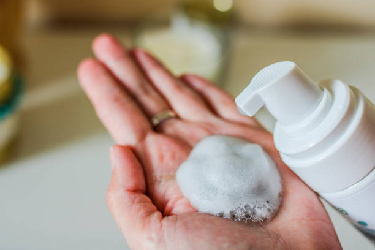
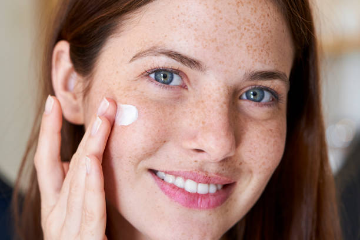
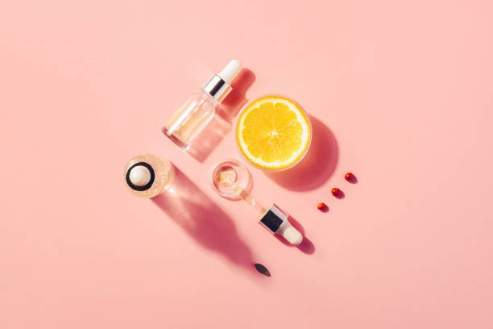
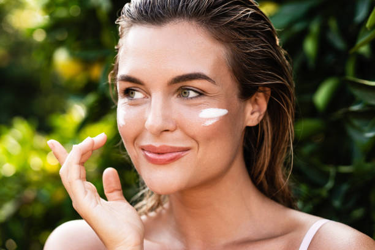

- Limpeza:
O primeiro passa deve ser sempre a limpeza,
pois é através dela que retiramos as impurezas que adquirimos durante o dia
ou então durante a noite, ou então até certo pertíodo de tempo.
Então a escolha de um bom produto é essencial para uma boa limpeza,
você obtém todos benefício com o [produto que será vendido] que irá garantir limpeza profunda, suavidade e levesa na pele.

- Hidratante:
O hidratante facial tem como principal função “repor a água” da pele do rosto,
mantendo assim a barreira cutânea protegida e a textura da pele sedosa e saudável,
sem oleosidade excessiva ou sensação de ressecamento.

- Vitamiana C:
A vitamina C é antioxidante e protege dos radicais livres que somos bombardeados a todo momento
Com a nossa vitamina C você tem total qualidade em execussão.

- Protetor Solar:
O protetor solar atua como medicina preventiva a fim de proteger as camadas da pele contra a radiação ultravioleta.
“O uso do protetor solar facial atua de forma preventiva, mas também é como um tratamento,
eu até comento que ele deveria ser considerado um medicamento.
A gente precisa lembrar que as radiações UVA e UVB possuem uma intensidade constante durante todo o ano,
então tanto inverno quanto verão elas penetram profundamente na pele.
O protetor solar facial é capaz de prevenir a ação desses raios”, fala a dermatologista.

*Esses são os passos que não podem faltar na sua rotina diária,
você pode estar incluindo outros produtos na sua rotina de autocuidado, porém esses são fundamentais.